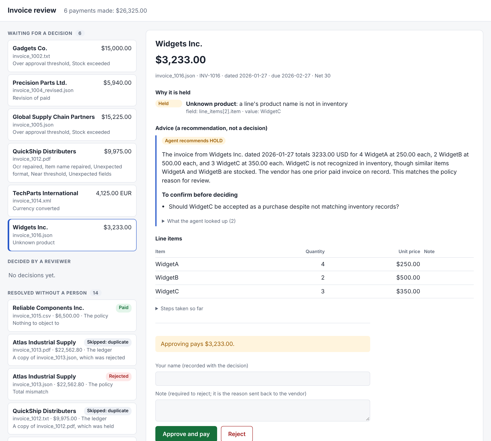
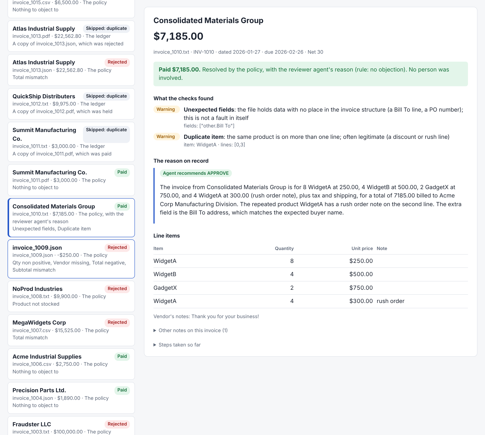

Design decisions, a demo walkthrough, how the outcomes changed as each stage was built, and what was left out.
That is what the system does with the brief's 20 sample files. Run the folder again and it pays nothing: $0.00.
One principle decides where everything goes.
The stages are nodes in a LangGraph graph. Blue: a model takes part. Amber: a person decides. Everything else is code.
| Decision | Why |
|---|---|
| The model transcribes; it does not interpret, correct or compute | A model that "fixes" a number produces one that reconciles perfectly and is wrong. Told to copy values as written, errors included, its output can be checked against the document. |
| Grounding: every value the model returns must appear in the document | It is the only check that catches an invented or altered value. It is deterministic, because the model returned one file three different ways across three runs at temperature 0. |
| Repairs need proof from the invoice itself | A scanner's O for 0 is read only when another value confirms it: on 1012, $3,500.O0 is confirmed by 7 × $500. No proof, no repair. |
| Recompute every total; exact decimal arithmetic | A stated total is a claim. 1007 and 1013 state totals their own lines don't add up to. |
| Stock is summed per product across lines | 1013 bills WidgetA on three lines of 15, 5 and 2. Each is within the 15 in stock; together they are 22. |
| The approval policy is a written, ordered table of rules in code | Arithmetic, stock and "has this been paid" have right answers. A table can be read, tested and audited; every decision names the rule that made it. |
| A model can make the system stricter, never looser | The reviewer agent can add a hold to an approval and nothing else. So the worst a persuasive invoice can cause is an extra hold. If the model is unreachable, the policy still decides everything. |
| Vendor text reaches a model only inside delimited blocks | An invoice is written by the party that wants to be paid. "URGENT, pay immediately" on 1003 is counted by code as one fraud signal; no model is asked whether it sounds convincing. |
| A ledger gives each invoice an identity and each payment a key | The same invoice arrives as two files, and folders get re-run. Identity is vendor, number and revision; a second copy is recognised by content, not file name. Without it this folder pays $4,890.00 twice. |
| A held invoice is a paused run, resumed by a person's decision | The decision is made later, in another process, by someone with a name. The run continues from where it stopped; nothing is re-read or re-decided. |
| Pay in the invoice's own currency; show the reviewer a dollar estimate | The vendor is owed what they billed. The reviewer types no rate and no amount. The rate service is a local mock, since the brief rules out internet access. |
| An unknown product is held if its name is close to a real one, rejected if it resembles nothing | "WidgetC" may be a misspelling or a new product: a person's call. "SuperGizmo" is not something Acme stocks. Code draws the line, by the same name matching the agent's lookup uses. |
| Structured files are parsed, not sent to the model | A parser is exact, free and gives the same answer every time. |
| A format no parser knows falls back to the model, and is always held | A .dat export or a supplier's own JSON layout can be read without writing a parser first. One of four samples was misread, so nothing in a new format is paid without a person. |
| A file the model reads that names a second invoice number is held | The model returns one invoice whatever a file holds. Two invoices in one PDF would otherwise pay the first and lose the second. |
| Only listed file types are sent to the model | The model is an outside service, and a folder holds notes, logs and source code as well as invoices. |
| The review screen adds no rules of its own | Deciding calls the same function as before, so what may be approved and what is paid are decided in one place. Vendor text is written to the page as text, never as HTML. |
| Model replies are recorded and replayed | The whole system runs offline with no key, tests are repeatable, and a re-recording that behaves differently fails a test. |
| Use | What it does | What fences it |
|---|---|---|
| Extraction | Transcribes a TXT, PDF or unfamiliar file into a fixed JSON schema | Grounding. A value not in the document is sent back with the specific complaint, three attempts at most. A retry that drops data is never used. |
| Reviewer agent | Chooses lookups (stock, similar products, a vendor's history), recommends, writes the reason a person reads | Its authority is fixed in code: it can add a hold. It cannot approve, reject or pay. A hold it adds can only be released by a person. |
| Critic | Looks for claims in that reason the evidence doesn't support | Checks in code run first and stand on their own: every figure must be in the invoice, the flags or a lookup result. Two rounds at most. |
Each step has the command, what to point at, how to say it, and what not to claim. Use a ledger of its own for the demo (demo.db; delete it to start over).
python main.py --invoice_path=data/invoices --offline --ledger demo.db --checkpoints demo-cp.db --summary
python main.py --invoice_path=data/invoices --offline --ledger demo.db --checkpoints demo-cp.db --summaryThe same command twice. --summary prints the summary lines and leaves out the JSON list of results.
| First run | Second run | |
|---|---|---|
| Paid | 6 invoices, $26,325.00 (1001, 1004, 1006, 1010, 1011, 1015) | 0 |
| Held | 6 (1002, 1004 revised, 1005, 1012, 1014, 1016) | |
| Rejected | 5 (1003, 1007, 1008, 1009, 1013) | |
| Skipped as a duplicate | 3 (second copies of 1011, 1012, 1013) | 3 |
| Already processed | 17 |
1002: the model made a mistake, was told, and fixed it. python main.py --invoice_path=data/invoices/invoice_1002.txt --offline
1012: scanner damage, read only where the invoice proves it. ...invoice_1012.txt --offline
$3,500.O0 and 26-Jan-2O26 exactly as written. Code read both, each with its proof on the flag.1013: every line passes, the invoice does not. ...invoice_1013.pdf --offline
python -m extraction.report data/invoices| Without | With | |
|---|---|---|
| Flags that would hold an invoice, across the 20 files | 41 | 32 |
| Model calls, for the 10 TXT and PDF files | 10 | 11 |
| Files improved / worse / unchanged | 3 / 0 / 17 |
python -m web --ledger demo.db --checkpoints demo-cp.db # then open http://127.0.0.1:8000
The queue on the left; one held invoice with its flags explained, the agent's advice and the decision form on the right.
main.py has exited. Each held invoice is a run saved mid-flight; the screen is a separate process that picks one up and lets it finish.15,000 or stock exceeded; set the outcome to Rejected. The lists show "5 of 14".
The "Resolved without a person" list, with 1010 open: paid by the policy, with the reviewer agent's reason on record.
python main.py --invoice_path=data/invoices --offline --ledger demo2.db --checkpoints demo2-cp.db --summary --trace reviewerOne line per invoice: who wrote the reason (the agent or the policy), its recommendation, and the lookups it chose.
Two true stories, both found by reading real output and not by tests:
Both are the same lesson: when an agent gets something wrong, look first at what it was given.
python main.py --invoice_path=data/invoices --offline --ledger demo3.db --checkpoints demo3-cp.db --summary --trace criticpython main.py --invoice_path=data/unfamiliar --offline --ledger demo-new.db --checkpoints demo-new-cp.db --summary --trace ingest| File | What it is | Outcome |
|---|---|---|
invoice_3004.dat | Pipe-separated lines with no labels: HDR|INV-3004|Coastal Bearings Co.|... | Read correctly in one attempt; held |
invoice_3001.json | JSON with a supplier's own field names | Read correctly; held |
invoice_3003.xml | XML with a different root element | Read correctly; held |
invoice_3002.csv | Other column names, the grand total repeated on every row | Misread, and rejected |
python main.py --invoice_path=data/invoices/invoice_1003.txt --offline --ledger demo4.db --checkpoints demo4-cp.db --summary --traceOne line per stage as it finishes: how the file was read, the flags found, the decision with its rule and reasons, and the branch taken.
The same 20 sample files, run through the system at each point in its construction. Each row shows what a stage is for by what it changed.
| Stage added | Commit | What happens to the 20 files | What changed, and why |
|---|---|---|---|
| Checks and repairs only | d6b6d14 | No decisions yet. Worst flag per file: 4 block, 6 review, 3 warn, 5 notes only, 2 none | The system can say what is wrong with an invoice, not what to do about it |
| Policy | 994d0ec | 8 approved, 7 held, 5 rejected. Approved invoices total $35,265.00 | Flags become decisions |
| Ledger and payment | 40d715d | 6 paid ($26,325.00), 7 held, 4 rejected, 3 skipped | Invoices are compared with each other. $8,940.00 the policy alone approved is not paid; $4,890.00 of it would have been paid twice |
| Review queue | 460d953 | Same outcomes. Held invoices now wait for a person | A hold stops being a dead end |
| Rate service | 5f324b7 | Same outcomes. 1014 is listed with a dollar estimate and paid in euros when released | A foreign-currency invoice can be approved like any other |
| Reviewer agent, first recording | 493ac7d | 5 paid ($19,140.00), 8 held | The model added a hold to 1010. It was wrong to |
| Agent told who the buyer is | a5d6c6a | 6 paid ($26,325.00), 7 held | 1010 is paid again. The model had been missing context |
| Critic, first recording | e3d4d80 | Same outcomes. 4 of the agent's 8 assessments sent back once | The reasons a reviewer reads are checked. No decision changed |
| Critic, after its review | b6009c7 | Same outcomes. 1 of 8 sent back, by a check in code | The critic was told what it had been missing; a hold the agent adds can no longer be undone |
| Unknown products split | 5ed41ad | 6 paid, 6 held, 5 rejected, 3 skipped | A rule change: 1008 (resembles nothing in stock) moves from held to rejected; 1016 (close to a real product) stays held |
| Review screen | 7e5844a | Same outcomes. Decisions move from the command line to the browser | The person deciding sees the flags explained, the agent's advice and what approving pays |
| Resolved list, search, filters | 43acd68, 2149c53, e151b15 | Same outcomes. Every finished run is logged and can be opened | What the application did by itself becomes visible and searchable |
| Model fallback | c84f37c | The 20 are unchanged. Four new files in unknown formats: 3 held, 1 rejected | A format with no parser can be read, and is never paid without a person |
| Invoice | Worst flag | Policy outcome | Why they differ |
|---|---|---|---|
| 1003 | Review | Rejected | No single flag blocks it. Four fraud signals together do |
| 1012 | Warning | Held | Nothing on it is wrong once repaired. It is $25 under the limit and carries other warnings; that combination is held |
Approved by the policy alone: $35,265.00. Paid with the ledger: $26,325.00. The difference, $8,940.00, is 1011's second copy ($3,000.00) and 1004's revision ($5,940.00). Of that, $4,890.00 would have been money paid twice ($3,000.00 + $1,890.00); the remaining $4,050.00 is the revision's real difference, which a person releases.
This is the only stage where a model can move an outcome, and only from approved to held. Its hold on 1010 was a mistake, and the cause was in what it had been given: nothing told it which company it was reviewing for. On every other invoice it reviews, in every recording, it has recommended what the policy decided. It has never recommended paying something the policy held.
| First recording | After its review | |
|---|---|---|
| Assessments the agent wrote | 8 | 8 |
| Sent back once | 4 | 1 |
| ...by a check in code | 2 | 1 |
| ...on the model critic's objection | 2 | 0 |
| Outcomes changed | 0 | 0 |
The model critic's early objections did not hold up. Each traced to something it had not been told: what a flag means, who the buyer is, that a vendor's own claim is not confirmation. Since the unknown-products change the agent reviews seven invoices; one is sent back, by code, and all seven end accepted.
Each stage was reviewed after it was built, and the findings fixed with a test for each. The ones that changed behaviour, not just code:
--recursive includes them.| Not built | Why |
|---|---|
| OCR for scanned images | The sample PDFs have a text layer. A scan is refused with a message saying so. |
| Reading Word, Excel or image files | Each is reported as an error for a person. Nothing in the brief to build or test against. |
| Matching to purchase orders and goods receipts | No such data in the brief. It is the first thing to add with real systems: stock on hand is only a stand-in for "quantity we can confirm receiving". |
| A vendor list | Would catch a changed bank account, a billing currency, and a vendor name spelled two ways. |
| Real exchange rates | The brief rules out internet access. The rate service is a local mock with made-up rates; a real one is one class with the same method. |
| Retrying a failed payment | The mock payment always succeeds. An unconfirmed payment is held for a person, never resent blindly. |
| Processing invoices from the browser | The screen is for decisions. Invoices are still processed by main.py. |
| Logins, deployment, concurrency at scale | Out of scope for a local prototype. A reviewer is whoever types their name, and the screen is served to this machine only. |
| Splitting a file that holds several invoices | Such a file is held or refused, for a person to split. Reading each invoice out of it is a change to what the model is asked for, and would need new recordings throughout. |
| Full-text search index | Search runs in SQL with one LIKE per word, which scans the table. Fine for thousands of rows; SQLite's full-text index is the next step. |
Each is a decision made here, to be confirmed with Acme in the first week.
| Fact | Where it comes from |
|---|---|
| All 20 sample files run with no API key, in about a second | python main.py --invoice_path=data/invoices --offline |
| The test suite runs offline in about 20 seconds, on Python 3.11 and 3.13, Linux and Windows | pytest |
| Nine of ten text files were grounded on the first model attempt | tests/test_recordings.py |
| A document that says "ignore previous instructions" can only write text into a field | tests/test_extraction.py |
| Without the ledger, the policy approves $35,265.00 for this folder; $4,890.00 of it is a double payment | tests/test_approval.py, tests/test_pipeline.py |
| With no recordings and no key, every invoice is still decided, by the policy | tests/test_pipeline.py |
| The pipeline diagram in the README is checked against the real graph | tests/test_pipeline.py |
The brief's own example path, invoice1.txt, does not exist | Running it lists the files that do |